The detailed reference: how to install and connect it, what each page of the app does, how to set up overlays,
redeems, scripts, the chat bot and the remote — and what to do when something doesn't work. Button names are as in the English interface.
The installer isn't signed, so Windows SmartScreen says “unknown publisher”. Click
More info › Run anyway.
On the first start Homin downloads the mpv music player itself (about 30 MB) and checks its fingerprint.
On Windows 10 also the small 7-Zip unpacker (0.6 MB).
Install a new version over the old one — your settings and data stay.
If Windows Defender or your browser blocks Homin
Homin isn't code-signed yet, and antivirus software sometimes guesses wrong about unsigned programs.
It has happened with Windows Defender (Trojan:Win32/Bearfoos.A!ml, where !ml
means a machine-learning guess, not a match with known malware) and with Firefox. It can come and go:
the same version may pass on another PC or on a second try. Microsoft reviewed a flagged
Homin.exe from 1.0.0rc22 and found it isn't malware.
That doesn't prove your copy is fine, so check it first:
Compare it with the sha256 shown next to that file on the releases page. If they
differ, delete the file and download it again.
If they match:
Browser: open its list of downloads and allow the file (Firefox: Allow download).
Windows Defender removed the installer: in Windows Security › Virus & threat protection ›
Protection history, open the item and choose Actions › Restore.
Windows Defender removed the installed Homin.exe: run the checked installer again.
You can help by sending the file to Microsoft as a false positive through its
file submission page, and by telling the author the
detection's name, which file it hit and what you were doing.
Please don't switch Windows Defender off or exclude a whole folder from it for Homin.
The same build comes as a folder archive, .tar.gz: unpack it anywhere and run Homin/homin.
Either way, install these with your package manager:
Program
What for
mpv
playing music (and the Twitch preview window)
pipewire or pulseaudio-utils
TTS as its own sound source that OBS captures; the music mix
ffmpeg
fallback playback, media file lengths, previewing sounds
Settings › Behaviour › Show in the app menu adds an entry to the application menu.
Smooth OBS preview
Without this the OBS preview in Homin is a series of screenshots, and each one is extra work for OBS. When the preview
shows real video, its corner says ● Live video.
Windows: nothing to install. Homin reads OBS's virtual camera through mpv (already downloaded for
the music) or ffmpeg. Every frame goes through JPEG, so it takes more CPU than on Linux.
Linux: it needs the v4l2loopback kernel module. Homin starts OBS's virtual camera itself while
the preview shows it, and stops it if it started it. Install and load the module once (Arch; it needs your kernel's headers):
Homin uses the module only if it is already loaded: otherwise OBS would ask for your password. The gear on the
preview turns the video on and off, sets the frames a second (10–60, 30 at first), the size (Full, up to 1920 px, or
Half, lighter on the CPU) and the size and rate of the pictures shown where there is no video (the Preview
in studio mode). It also tells you what each costs.
Try it without any accounts
The --mock option starts development mode: every page fills with a made-up chat, events and songs,
OBS is pretend too, and the data lives in its own folder. Nothing is sent to Twitch. TTS starts paused —
Resume TTS at the top turns it on. Every screenshot on this site was taken this way.
./Homin-*-x86_64.AppImage --mock
First start
Activation
First Homin asks you to Activate Homin: paste your licence key (it starts with
HOMIN-) and sign in to Twitch with the account the key was made for. The same window walks you through the
Twitch sign-in, like the wizard. Then Homin restarts with everything on. No key yet? How to get one.
Until there is a key nothing works (no OBS, music, TTS or overlays), but
Look around first lets you browse the pages — they are dimmed and take no clicks.
The key is bound to the channel, not its name: it keeps working after the channel is renamed.
If you signed in with another account, the window says so and offers to sign out.
About shows who the key is for; Remove key (twice) forgets it and restarts
Homin inactive. The Twitch sign-in stays.
By using a key you accept the licence agreement; the privacy policy explains what the app keeps and sends:
nothing to us, and to other services only what the features you turn on need. Both are under the key field and in About.
How to get a key
A key is given for a donation, of any amount, to the fundraiser for the unit of my friend who is at war. It is a thank-you,
not a payment for Homin: the money goes to the fundraiser. The page
homin-keys.veekk.workers.dev does the rest:
Press Sign in with Twitch. Twitch only confirms whose account it is; nobody asks for access to it. The page shows a code.
Press Open the jar: it opens the fundraiser with the code already in the comment. If the comment is empty, type the code in yourself.
Donate any amount. You can leave the page open: the key appears on it within a minute or two.
Copy the key and paste it into the Activate Homin window.
The key isn't lost: sign in with Twitch again and the page shows it. It shows a key only to the account's owner.
The key is made for the Twitch account you signed in with. Another channel needs its own key.
No key after a few minutes (the comment was erased, say)? Write to the author on Twitch (twitch.tv/veek_k) or on Discord.
The setup wizard
The steps are on the left, the instructions one by one on the right. Next to each instruction is the button or field that does it,
and its number turns into a green tick as soon as Homin sees it's done. What the app can't see (a setting
in a browser, say) you tick off with Done.
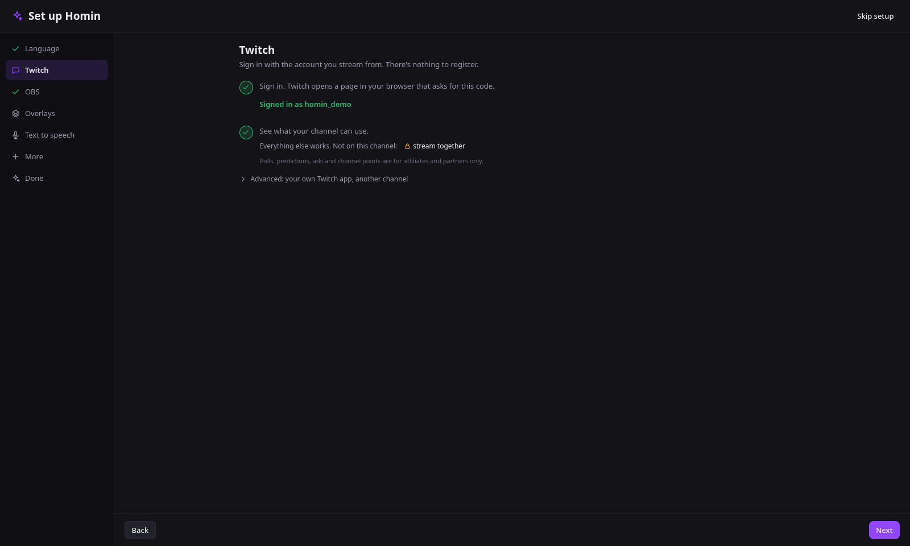
The Twitch step: what to type into each field of Twitch's form, with copy buttons
Language and look — the app's language and that of the default chat texts, the theme, the scale.
Twitch — a sign-in with a code through Homin's app (nothing to register) and what your channel can use.
Your own Twitch app is under Advanced.
OBS — the WebSocket server, the password and connecting; when it fails, the wizard says why.
Overlays — pick a scene and the overlays, and Add to the scene adds them to OBS at the right size.
Text to speech — the engine (Supertonic 3, suggested, Piper, StyleTTS2, RAD-TTS++, the system's voices or “Not now”), installing it, the voice, a test and the sound for
OBS. The wizard checks by itself whether OBS hears the speech.
More — Discord, Spotify, donatik.ua and bringing things over from other apps (all optional).
Done — how Homin starts and closes, and what's ready.
Any step can be put off (Later), or all of it skipped. Settings › Data ›
Run setup again opens the wizard again — and shows what's already done.
Connections
Everything in the wizard can be done by hand: Settings (the last item in the menu) › the
Connections tab. On the left are the services with their state, on the right the settings of the one picked. Clicking a
service in the bottom bar opens it here.
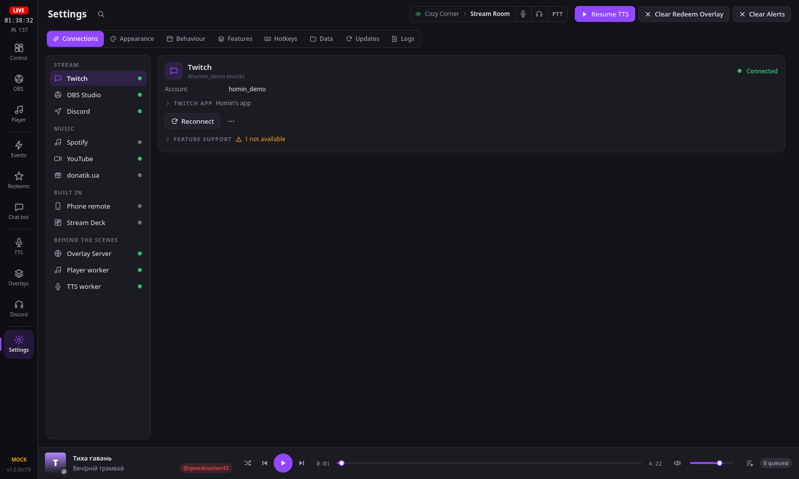
Twitch connected; below it, what your account allows
Twitch
Click Sign in on the Twitch card. The card shows a short code: open the address next to it
(twitch.tv/activate), type the code and confirm. Homin signs in through its own Twitch app, so there's nothing to
register.
Your own app (registered at dev.twitch.tv/console/apps: Client Type Public, OAuth Redirect URL
http://localhost) goes into Twitch app › Client ID, then sign in again;
an empty field means Homin's app.
The card turns green and shows what your account can do. Leave the Channel field empty
to work with your own channel. If you sign in with an account other than the channel's, chat works, but some events
(follows, subs, bits, redeems) Twitch gives only to the channel's owner — the card says which are missing.
Make rewards in Homin
Twitch lets an app refund points only for rewards that the same app made. So make them on the
Redeems page with Create on Twitch, not in Twitch's dashboard.
Another app's reward can be moved to Homin.
A new feature asks you to sign in again?
Some features (shoutouts, polls, the ad schedule, clips from the past broadcast, chat modes, AutoMod, Hype Train) need new
Twitch permissions that older sign-ins don't have. Click Reauthenticate on the Twitch card — once.
OBS Studio
In OBS open Tools › WebSocket Server Settings, turn the server on and look up the port (4455) and the
password (Show Connect Info).
Type them into the OBS Studio card and click Connect.
Start OBS with Homin — starts OBS when Homin starts (if OBS is on this PC and not
running yet). The card shows which program it starts; Choose… picks another.
Start OBS minimized — to the tray (without an OBS tray icon its window shows anyway).
Close OBS with Homin — when Homin quits (not when it hides to the tray or
restarts), and never while OBS is streaming or recording.
Spotify (optional)
Only needed if you want Spotify songs in the queue. It takes Premium, and the songs play in your Spotify
app, so it has to be open.
Add the Redirect URI from the Spotify card to it (there's a copy button next to it).
Paste the Client ID into the card and click Sign in.
Player › Playback: turn on Play Spotify songs from the queue.
For viewers to hear Spotify: on Linux add it to the music mix, elsewhere as a sound source
in OBS. Check Spotify's and Twitch's music rules first.
Discord (optional)
Announcements, clips and redeem messages go through webhooks — no bot, and nothing to make on Discord's
developer portal.
On the Discord page open Channels (or Settings › Connections › Discord) and click
Pick in Discord by the first row. In the browser pick a server and a channel and click
Authorize: Discord makes a Homin App webhook there with Homin's icon, and the browser says
Discord connected — you can close the tab. It takes the Manage Webhooks permission on the server.
For other channels (clips, a redeem log…) type a name, click Add a channel and pick
the channel the same way. Only you see the names.
A webhook of your own (Server Settings › Integrations › Webhooks › New Webhook › Copy Webhook URL) can be
pasted through ⋯ › Paste a webhook URL… on the row. The same menu forgets the webhook or removes the channel.
Discord sends the browser back to Homin's overlay server, port 9863. If you changed the port, the browser lands on a page that
doesn't open: copy its address and paste it through ⋯ › Paste a webhook URL… — Homin finishes by itself.
Post as (on the Discord page, under Channels) — who posts new messages:
the webhook itself (Homin App for a picked channel), your Twitch channel (name and picture) or a name of yours with the webhook's picture.
Discord doesn't rename what's already posted. A name Discord refuses (with “discord” or “clyde” in it) is replaced by the webhook's name.
A channel without a webhook, or a deleted one, posts to the first channel. Whoever has a webhook URL can post in that channel, so it's
kept in the system's keyring and never goes into an export.
Discord's mic and headphones
A piece of the top bar shows the server and voice channel you're in, with switches for the mic, headphones and
push-to-talk. Discord allows this only to an app's owner, so it needs your own app:
Under OAuth2 add the redirect http://localhost and copy the Client ID and Client Secret.
Paste both into the Discord card's Voice controls section and click
Connect. Discord asks for permission once.
From then on Homin connects by itself when Discord runs, and follows changes made in Discord itself. It needs Discord's official
app on the same computer (the regular one, Flatpak or Snap); clients like Vesktop don't have these commands.
Streamer Mode can't be switched from outside — Discord can turn it on by itself (User Settings › Streamer Mode).
donatik.ua (optional)
Paid songs from donatik.ua's music widget play in Homin's player ahead of every other request.
On donatik.ua open the music request widget and copy its Moderator link
(https://widget.donatik.ua/…/admin).
Paste it into Settings › Connections › donatik.ua and click Connect.
At the top of every page: Pause TTS, Clear Redeem Overlay,
Clear Alerts (icons only in a narrow window), the notification bell and Discord's voice.
In the menu — the services' state: a service without a connection puts a dot on its page's item (grey — off,
yellow — connecting, red — an error; hover to see which and why). While everything works, the menu stays quiet.
While you stream, the top of the menu shows LIVE with the stream's time and viewers instead of the logo; a click opens the
Stream summary: the length, peak and average viewers, new followers, subs, bits, chat,
redeems, song requests, clips, markers, raids and ad breaks.
It counts while you're live, survives a Homin restart, and takes a stream that drops and comes back within five minutes as one.
The last 20 streams are kept. A summary can be copied as text, sent to a Discord channel or posted
by itself a few minutes after each stream.
Chapters copies chapters for a YouTube description (0:00 Just Chatting,
12:34 Boss…): the category at the start, each category change and each stream marker. If Twitch still has the
past broadcast, its markers are used — the ones moderators placed with /marker too. YouTube shows chapters from three on,
each at least 10 seconds long.
A restart mid-stream
If you restart Homin while live, the chat starts with the messages since the stream began (up to 100, from
recent-messages.robotty.de — a service Chatterino and others use), and the summary counts what it missed. Activity
comes back as it was: what Homin saw, and what happened while it was closed (subs, gifts, raids, bits, watch streaks
from the chat history, followers from Twitch). TTS, the bot, alerts and overlays don't react to them a second time. Redeems, Power-ups and shoutouts
from that time can't be found afterwards.
Resource usage
Settings › Appearance › Show resource usage (off at first) adds a small table to the bottom of the menu:
Homin's CPU, memory and video memory (with the programs it started: the TTS engine, mpv) next to
the whole PC's CPU, memory, GPU load and video memory. A click shows the breakdown in three parts:
Homin (the app and TTS together, with Free memory for engines that hold a model),
other programs (OBS and its browser sources) and the whole PC.
The tray and closing the window
Closing the window asks: Keep running in the tray (TTS, alerts, overlays and the chat bot keep
working) or Quit. With Remember my choice it doesn't ask again; to change it,
Settings › Behaviour › When closing the window. Restart Homin
(there and in the tray menu) starts a fresh copy and closes this one, while OBS and the stream carry on.
Control Center
The screen for being live.
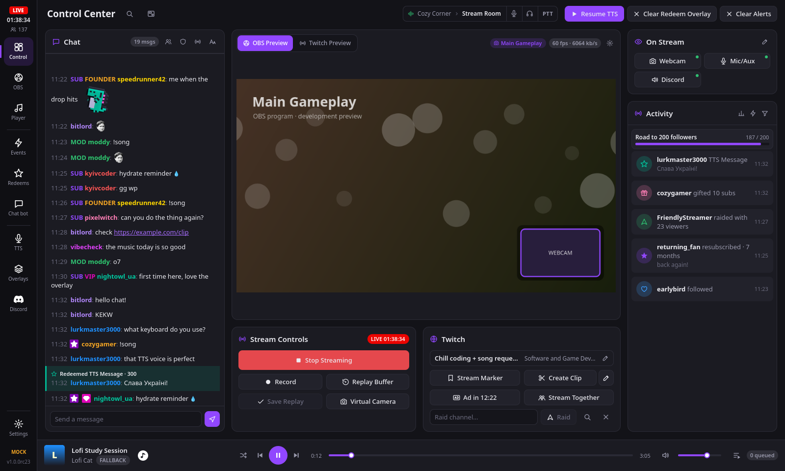
Chat, the OBS preview, the Stream Controls and Twitch cards, On Stream and Activity
Arranging the cards
Drag a card by its title to another place or another of the three columns.
Drag the gap between two cards to make one taller (On Stream scrolls when it's shorter than its buttons), and the
gap between columns to make one wider. A double-click on a gap gives the size back.
The button by the page's title hides or shows each card (the chat, the preview, Stream Controls, Twitch, On Stream,
Activity) and has Reset the layout.
Chat
Emotes, GIFs, links, replies, mentions, highlighted announcements and Twitch's badges as pictures (or as the words HOST, MOD, VIP,
SUB: right-click › Badges as pictures).
Right-click a message: reply, pin, copy, send to TTS, TTS name…,
moderate, Viewer card.
The broadcast button in the chat's header shows events between the messages, as Twitch's chat does (off at first).
Aa in the header (a slider), or Ctrl+wheel over the chat, sets the chat's text size (80–200%), badges and
emotes with it. The raid browser's chat follows.
Who is in the chat
The people button in the chat's header (or Ctrl+K › Who is in the chat): who is in your chat,
the quiet ones too. Whoever wrote lately comes first, with their badges, then everyone by name. Find a name, show or
hide chat bots, and click someone for their viewer card. Twitch lists only signed-in viewers with the chat open, a few
minutes late; after updating, sign in to Twitch again once.
The viewer card
When the account was made (with a warning if it's less than a week old), whether and since when they follow, their sub tier, their last
lines in chat, their redeems and song requests, when Homin first saw them and how many messages. From there too:
a shoutout, a timeout, a ban (it asks first and offers a 10-minute timeout next to it), “TTS skips their messages” and a link to their Twitch page.
Chat modes, Shield Mode and AutoMod
The shield in the chat's header — Shield Mode and the chat modes: emote-only, followers-only (anyone
or those following from 10 minutes to 30 days), slow (3 seconds — 2 minutes), subscribers-only, unique chat.
It's for a hate raid, without opening Twitch. While something is on, a strip under the header names it (red for Shield
Mode) — also when another moderator or Twitch's website turned it on.
Messages held by AutoMod wait above the chat with their author and the reason (AutoMod's category and level or a
blocked term). ✓ lets one into chat, ✕ denies it. They go away when another moderator answers or the time runs out.
The preview and the stream's health
The OBS preview takes all the room the cards leave; the Twitch Preview tab shows the stream
as viewers get it (a few seconds behind, sound off at first so there's no echo).
While OBS isn't connected — a Start OBS button.
Stream health — a badge above the preview: usually OBS's frames and bitrate. When something's wrong it turns
orange (red when serious) and names what: frames lost on the way to Twitch, the encoder or GPU
can't keep up, OBS is reconnecting, the bitrate is far below its usual, the disk fills while recording.
A notice in the app says so too, and on the desktop when the window is in the background: a serious one at once, a mild one
if it lasts a minute, a repeat after five minutes only if it's worse. Nothing is written to chat;
Stream health warnings turns it off.
Stream Controls
Starting and stopping the stream, the recording, the replay buffer, the virtual camera (what's on is lit).
Start Streaming first looks for what may be wrong: a muted mic or a hidden camera,
an overlay that didn't load, TTS paused, Twitch not connected, no title or category, last stream's title.
If all is well it starts at once, otherwise it says what, with Start anyway and Cancel. The check
is turned off in the same window or in Settings › Behaviour; a hotkey starts without it. Stop Streaming
asks first.
The Twitch card
The title and category in one line: a click opens Stream Info — the title,
category and tags, saved with Update. The folder button by the title holds profiles: save a title,
category and tags under a name, and later put them on Twitch in one click.
Stream Marker, Create Clip (Clips),
Stream Together (opens Twitch's page: there's no public API) and the raid.
Ads — a countdown to the next scheduled one, how long the current one still runs; in the menu, snooze it by 5 minutes or
run one now (30 seconds — 3 minutes).
In a narrow window Stream Controls and Twitch become tabs, in a tall one they stand one under the other.
On Stream and counters
One click hides or shows the camera, mutes the mic, Discord or any source in OBS's live scene. Red means
off. Until you pick your own with the pencil, it offers the camera, mic and Discord, found by what OBS says about them.
Under them — the countdowns with Button on the Control Center: a click starts one, and a running one shows its time and a menu
(a minute more or less, Switch now, stop).
Counters (deaths, wins, cups of tea…): − and + count, a click on the name renames it, sets the number, deletes it
or takes it off the stream; New counter… in the pencil adds one (up to 20). The hotkeys
Counter +1 and Counter −1 count the one picked — from inside a game too.
Activity
Follows, subs, gifts, bits, Power-ups, raids, redeems, song requests, watch streaks, shoutouts (to you and
yours) and first-time chatters. The filter hides what you don't need. ⚡ sends a test event through everything for real (the feed, TTS,
alerts), to check your settings without a real one.
Right-click a follow, sub, bits or raid — Show alert on stream: for an event that
came while alerts were off, or came back into Activity after a restart. Twitch sometimes doesn't send a follow
live; while you're live, Homin reads the newest followers every minute and shows a missed one itself, once.
Hype Train and goals — the train at the top of the panel with its level, how much to the next one, the time and who gave the most; it stays
a minute and a half after the end. The creator goals from Twitch's dashboard (followers, subscribers, bits…) — each with a bar.
Polls and predictions — the chart button: a poll (2–5 choices, optionally extra votes for points) or a
prediction (2–10 outcomes). While one runs you see the live numbers: end or remove a poll; lock a prediction, click
Wins on what happened, or cancel it with the points refunded.
Hype Train, goals, polls, predictions, ads and channel points are given by Twitch to affiliates and partners only.
Clips
The moment now, the clip later
Create Clip while live only saves the moment (and places a marker; that can be turned off). Nothing shows up on
Twitch, so nobody sees a clip named after the stream. The button next to it (with the number not yet made) opens the
Clips window — it's in the stream summary too.
For each moment set where the clip starts (h:mm:ss, or 5 s earlier or later), its length (5–60 s) and its title.
Watch plays the piece in a loop in an mpv window (or opens the past broadcast in a browser at that spot).
Create Clip makes it on Twitch from the past broadcast. Then it can be posted to Discord:
by itself, if clips are on on the Discord page, or with the Post to Discord button.
Twitch needs “Store past broadcasts” on. Past broadcasts live for 7 days (60 for partners), so
finish a clip within a week. The stream summary reminds you of the ones not made.
As before — right away
With Make clips right away (in the Clips window) a clip is made on Twitch at once. Trim and rename it
there (Edit on Twitch: the editor for the first 24 hours, then the clips manager) and click
Done — Homin takes the title from Twitch and only then posts it to Discord.
The clip's card on Discord is Homin's own (the title as on Twitch when posted, a picture, a link): a clip's page on
Twitch keeps its first title even after a rename.
Raids
Starting a raid
The raid field on the Twitch card takes a channel's name, @name or a link from the browser (twitch.tv/name, even …/videos).
Once started, the channel and Twitch's 90-second countdown show above the chat, with ✕ to cancel and a button that starts
Ending soon together with the raid. If the other channel's settings don't allow the raid, Homin says which.
A raid started on Twitch's website has no countdown here (Twitch doesn't tell apps about it), but cancelling it there clears the countdown.
“Raid Now” is on the website only.
When the raid has gone, Activity notes it, and while OBS is streaming a window offers to stop the stream, start
Ending soon or keep streaming. The switch Stop the stream by itself after a raid (in the countdown's settings too)
does it by itself — off at first.
Find a channel to raid
The magnifier by the raid field opens Find a channel to raid: who's live in your category (or another one, or
all), in the languages you pick (at first your channel's language; the pick is remembered) and, if you like, in a range of viewers —
the biggest first. Each card has a Raid button.
Clicking a card shows a closer look: the stream (in the Twitch preview, 480p) and its chat with the latest messages. The field under the chat
writes there from your account — to say hello before the raid (if the channel refuses, in followers-only
mode, say, you see why). Twitch shows signed-out viewers an ad at the start, so the stream usually starts
after about half a minute; until then you see a picture of the channel.
OBS Control
The OBS page (Ctrl+2) is OBS Studio with everything taken out but what you need while
streaming: scenes, sources, the mixer, studio mode, the stream and recording. Sources are moved and edited right here, as in OBS, so
you rarely need to switch to it. Homin talks to OBS through its WebSocket server
(connecting), so OBS can even be on another computer.
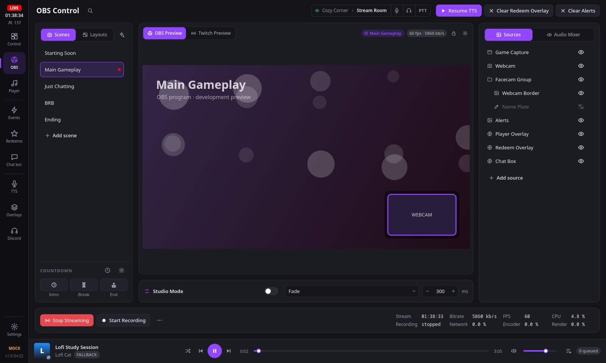
Scenes on the left, the preview in the middle, sources and the mixer on the right, OBS's outputs and numbers at the bottom
The preview (two in studio mode), where sources move with the mouse; above it the scene, frames and bitrate, the lock and the gear.
Right
The scene's Sources and the Audio Mixer — in one column with a switch; side by side, in two columns, only in a wide window (from about 1800 pixels), so the preview stays big.
Instead of the cards the page says why there's no connection, and offers:
Start OBS — when OBS is on this PC and Homin found it (obs or the Flatpak on Linux,
the usual install folder on Windows). While OBS starts this says Starting OBS… (up to half a minute), and
Homin connects by itself as soon as the WebSocket server answers. The same button is on the Control Center's preview.
Connect now — without waiting for the next try.
Connection settings — the address, port, password; Start OBS with Homin,
Start OBS minimized and Close OBS with Homin are there too.
An OBS started before Homin shows empty overlays: they had nothing to connect to. About ten seconds after
connecting, Homin refreshes each such browser source — during a stream too (they're empty anyway); working ones are left alone.
Scenes
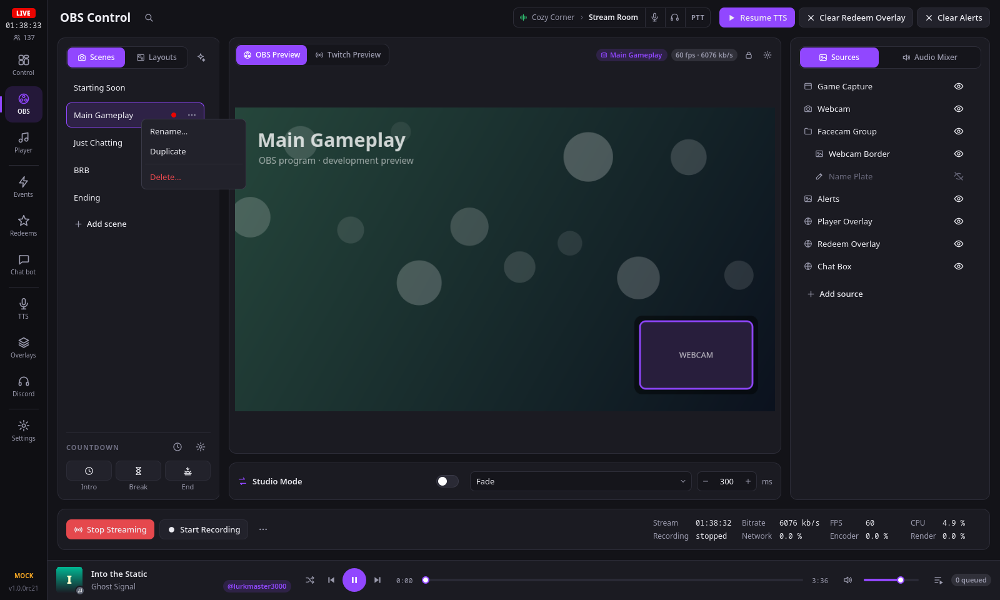
A scene's menu: rename, duplicate, delete
A click switches the scene on air (marked PROGRAM). In studio mode a click picks the
PREVIEW, and a double-click switches the program at once.
⋯ on a scene (it shows on hover; or right-click): Rename…,
Duplicate, Delete… (with a confirmation).
Add scene under the list makes an empty one.
A copy keeps every source's place, size and crop. OBS doesn't allow a group in two scenes, so a copy leaves groups
out and says which.
Tick the scenes you need; “Also in my other scenes” is for your own
Makes the scenes in OBS that a stream with Homin is ready with at once. Each can be switched off:
Scene
What's in it
Starting soon
a background, the countdown overlay, the song card
Live
chat, the song card, counters; you add the game or screen and the camera yourself
Be right back
a background, the countdown
Ending soon
a background, the countdown
The scene Homin · Alerts & sound goes into each: alerts, redeems, the Hype Train, TTS and music. So each
overlay is one browser source for all the scenes, and an alert never plays twice.
Nothing of yours is deleted or moved. An existing scene with the same name gets only what it lacks (never the background);
an overlay or sound capture already in OBS is used again; running it again adds nothing.
Also in my other scenes adds the alerts and sound to scenes you made yourself too (a scene that already
shows some of it gets only the rest).
Countdowns without a scene picked yet get the new scenes.
Homin doesn't add the game, screen or camera: on Wayland OBS asks about them in a desktop dialog, so that's done in OBS.
Layouts: everything for a spec, game or mood in one click
A layout keeps several things together and puts them on in one click: say, for each spec its own chat cover,
webcam frame and song card look. The Layouts tab is next to Scenes on the OBS page.
New layout saves what you tick as it is now: the live scene's sources,
and from each only what's picked — Shown, Place, Picture
(for an image only the file is ticked at first, so the layout changes the webcam frame's picture and leaves the camera itself alone); whether to
Switch to this scene; the look of the Now playing card or the chat overlay; an Overlay style preset;
an Alerts preset. A layout touches nothing else: a spec's layout never changes your Be right back scene.
How to apply one:Apply in the list, Button on the Control Center,
the hotkeys Layout 1–4 (the first four in the list; no keys at first, see Shortcuts),
the phone remote, the Layout key and the Layouts knob
on a Stream Deck.
A check first: if a scene, source, picture file or preset is missing, nothing changes, and a notice says
what. If OBS refuses halfway, everything done is put back. Layouts are applied one at a time, whoever pressed.
The highlight: the applied layout is lit while everything it keeps is as it set it. Move a source in
OBS or change a preset and the highlight goes.
Smoothly:Fade out at the bottom of the tab (At once or 0.2–1 s; 0.3 s at first).
A source that hides fades out; one that appears fades in; a shown picture blends into the new one, so the chat
cover never turns see-through for a moment. The camera and browser sources change at once. The song card and chat change their look along with OBS.
A layout's pictures are kept in Homin's media library, so the originals can be moved or deleted, and a settings export
carries layouts to another PC. Redrew the pictures? Refresh pictures from their files.
Scene collection: a layout belongs to the OBS scene collection it was saved in, and isn't applied in another;
Use in this collection moves it.
A layout's ⋯ menu:Update from what's on now, Repair… (what's gone and how
to fix it), Duplicate, Icon… (an app icon or a picture of yours, like
a spec's icon), Button on the Control Center, the order, renaming, deleting.
The preview
The preview shows the live scene. There are two ways:
Way
How, and what it costs
Live video
OBS's virtual camera as video, at OBS's frame rate; the corner says ● Live video.
Homin turns the camera on while the preview shows it, and off if it turned it on. Windows — nothing to install (mpv or ffmpeg);
Linux — needs v4l2loopback. 30 frames a second is about 25% of one core.
Pictures
Screenshots OBS takes on request: each one is an extra render inside OBS during the stream.
1280 px × 10 a second is about 9% of a core, 1920 × 20 about 33%. They also stand where there's no video: the Preview in
studio mode, and while the video starts.
The gear above the preview (in studio mode, on each of the two) sets:
Live video (OBS's virtual camera) — on or off, Frames a second (10–60,
30 at first), Size: full (up to 1920 px) or Half, lighter on the CPU;
Pictures — the width (640, 1280 or 1920) and rate (2–30, 10 at first);
and shows what's on screen now (“Showing now: live video”) and roughly what it costs.
The lock above the preview is OBS's “Lock Preview”: nothing moves, and a click on a row in the sources list opens the editor.
Moving sources on the preview
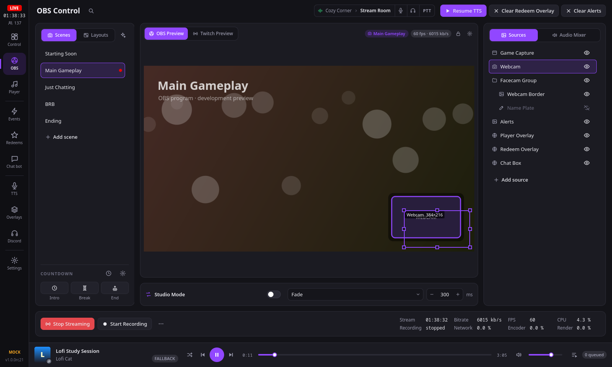
The camera picked: a frame with handles and its size; it's lit in the sources list too
As on OBS's editing screen (in studio mode, on the Preview, so the program changes only with the transition):
Action
What it does
Click
picks a source (or a click on its row in the list). A smaller source is found before a full-screen overlay over it.
Drag
moves it; snaps to the frame's edges and middle
Drag a corner
resizes, keeping the shape
Drag an edge
stretches one way
Shift
with a corner — any shape; while moving — no snapping
Sources inside a group are picked and moved too (except in a rotated group). Hidden, locked and rotated sources stay put.
The sources list
The sources of the scene you're editing (in studio mode, the Preview's), with groups and what's in them. The eye shows and hides;
a hidden one is grey.
Order: drag a source's icon (it turns into a handle on hover) onto another row — the source takes its place; onto a group's
source — the group's place. Near the top and bottom edge the list scrolls by itself.
⋯ on a source: Lock, Move up / Move down,
Copy to scene, reload a web page, play, pause or restart a video, OBS's own
Properties or Filters windows, and remove it from the scene. Removing asks first: a source that's in no other scene
OBS deletes entirely.
The source editor
Double-click a source (on the preview or in the list) to open its panel over the scenes list. It's not a dialog: the preview and
the sources list stay at hand, a change shows on the preview at once, you can keep dragging sources, and picking another source switches the
panel to it. Esc or × closes it. A newly added source opens in the editor by itself.
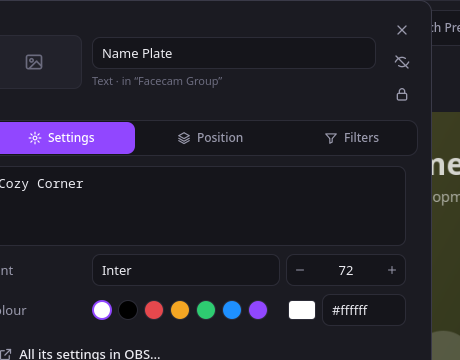
Settings: text
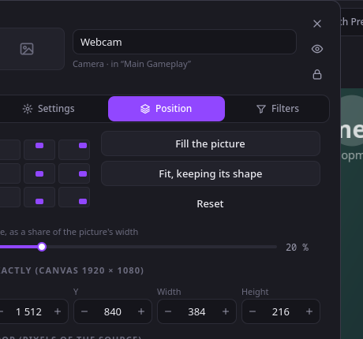
Position
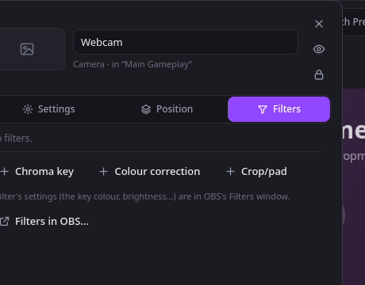
Filters
At the top — a small picture of the source as OBS draws it (refreshed every two seconds), its name (changing it renames
the source), its kind and scene, show/hide and the lock.
Settings — the main ones for the common kinds:
Kind
What can be changed
Text
the words, font, size, colour (swatches or your own #rrggbb)
Image, video
the file; for a video, looping and “restart when shown”
Web page
the address, width and height, whether its sound goes to OBS
Colour
the colour
Camera, mic
which device
For everything else, All its settings in OBS… opens OBS's own Properties window.
Position:
nine places — the corners, edges, middle — at the current size;
Fill the picture, Fit, keeping its shape, Reset;
the size as a share of the frame's width (a corner stays in its corner);
an exact box in canvas pixels — X, Y, width, height — and the crop on each side.
Filters: turn existing ones on, off or remove them; add a Chroma key, colour correction or
Crop/pad (for a mic, noise suppression or gain). A filter's fine settings (the key colour,
brightness…) are in OBS's filters window: Filters in OBS….
Adding a source
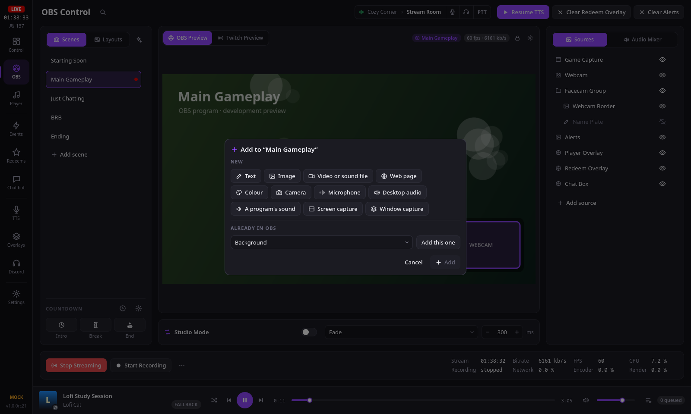
A new source of one of the kinds, or one already in OBS
New: text, an image, a video or audio file, a web page, a colour, a camera, a mic, desktop
audio, an app's audio, a screen or window capture — only the kinds your OBS has.
Already in OBS: a source already in another scene (of the kind picked above, or any while no kind is picked),
or a whole scene — it becomes nested.
Then the editor opens — to pick a device, a file or a place.
A screen or window capture is picked in OBS itself (on Wayland, in a desktop dialog).
The Audio Mixer
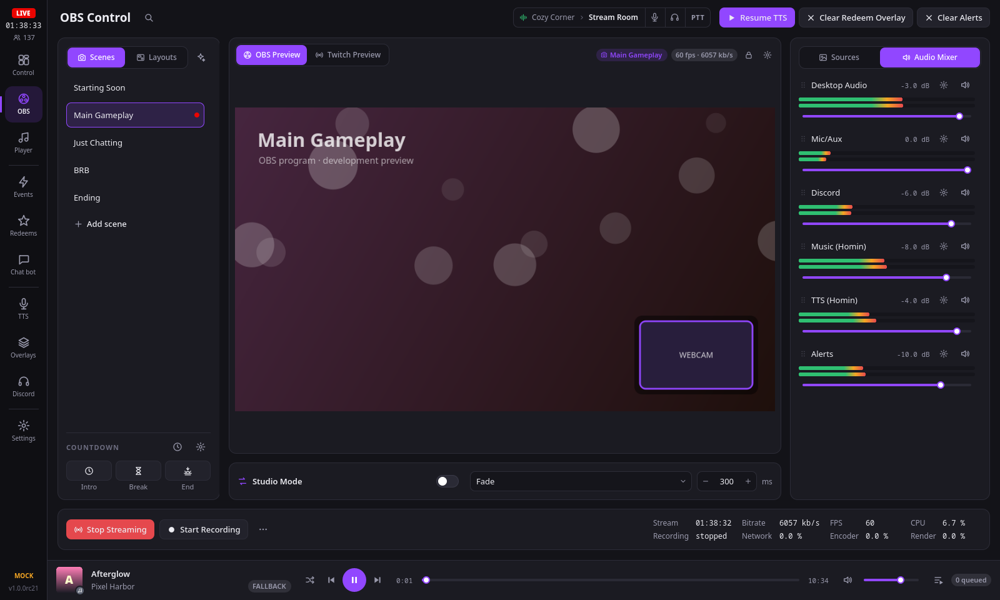
Each input with its sound level, volume in dB and a mute button
Each of OBS's audio inputs: the live sound level, a volume slider (in dB) and mute.
Inputs can be dragged by their handle to another place; ⚙ › Hide from Homin's mixer (or right-click)
takes one you don't need away, and Show the hidden ones under the list brings it back. Only Homin's mixer changes, not OBS's.
⚙ — Tracks and monitoring:
Tracks — which of OBS's six tracks the sound goes to. Which track the stream, the recording and Twitch's VOD track take
is set in OBS's output settings (the stream usually takes the first).
Monitoring — Off (only the stream hears it), Only me (you hear it, the stream doesn't) or
Me and the stream.
The mic and Discord can be muted from the Control Center too — the On Stream card.
Studio mode
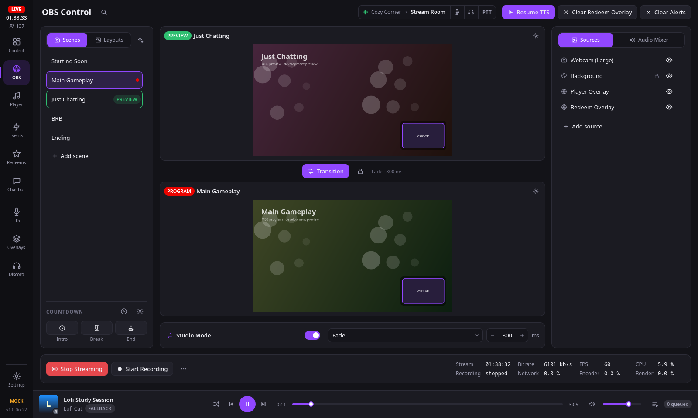
The Preview at the top, the transition in the middle, the program at the bottom
The Studio Mode switch under the preview. Then first the PREVIEW, then the
Transition, then the PROGRAM — side by side, when they're bigger that way.
A click on a scene puts it in the Preview; sources move there, and the sources list shows that scene, as in OBS.
Transition takes the Preview to the program; next to it are the transition kind (Fade, Cut…) and its length in milliseconds.
The Preview is in pictures (OBS's virtual camera carries only the program).
The stream, recording and OBS's numbers
Start/Stop Streaming and Start/Stop Recording buttons; while recording, Pause Recording, and
the recording's time says “paused”.
In the ⋯ menu: Start Replay Buffer, Start Virtual Cam and
Screenshot. An output that's on gets its own button — Save Replay,
Stop Virtual Cam.
Screenshot saves the live scene to the Pictures › Homin folder — when OBS is on another PC too (the picture
comes over the connection).
Next to them, OBS's numbers: the stream and recording time, bitrate, FPS, OBS's CPU and the frames lost in the last 30 seconds as three numbers:
Number
What it means
What helps
Network
frames that didn't reach Twitch
a lower bitrate, a wired connection
Encoder
frames the encoder didn't manage to encode
a faster preset or a lower resolution
Render
frames OBS didn't manage to draw — usually the GPU busy with the game
capping the game's frame rate, simpler scenes
The numbers turn yellow or red where the stream health warnings begin; the
warnings themselves are above the buttons.
The countdown: Starting soon, Be right back, Ending soon
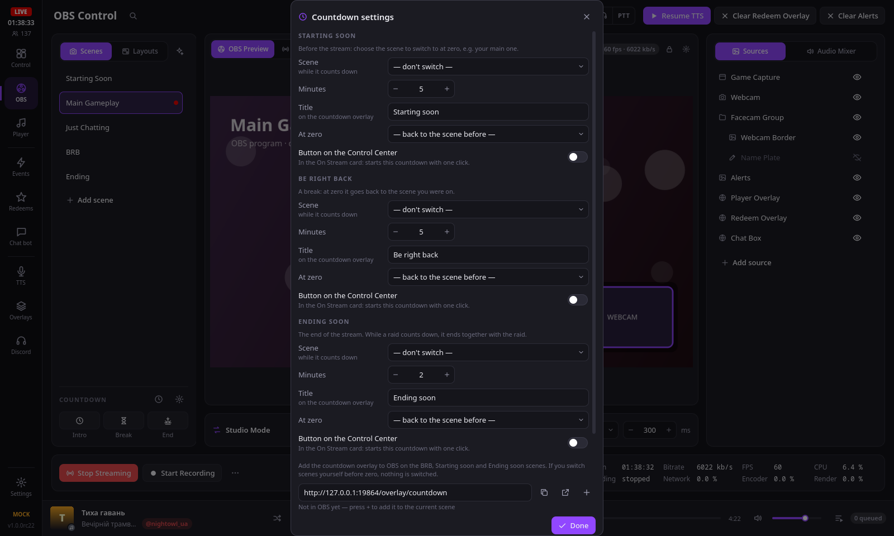
Countdown settings: the scene, minutes, title, what happens at zero, a button on the Control Center
Three buttons under the scenes (icons in a narrow window). Each switches to its scene and counts the time on the Countdown overlay
(countdown).
While it runs: a minute more or less, Switch now or stop and stay. If you switched the scene
yourself before zero, the timer switches nothing and stops nothing.
At zero — the next scene: after a break, back where you were. Ending soon can stop the stream instead, and while a
raid's countdown runs it ends together with the raid (also when the raid was started after the countdown).
Countdown settings (the gear): for each, the scene, minutes, the title on the overlay, what to do at zero and
Button on the Control Center (on the On Stream card). The overlay's address and the switch
Stop the stream by itself after a raid are there too.
Count down to a time of day (the clock): “Starting soon until 20:00” — today, or tomorrow if that time has passed.
The overlay's look (where it stands, size, font) is on the Overlays › Countdown page.
OBS elsewhere in Homin
Control Center: the OBS or Twitch preview, Stream Controls with the check before going live,
On Stream — the camera, mic, Discord or any source in one click.
Redeems and events: the “switch scene” and “show/hide source” actions, welcoming a raid with a scene or a source.
Overlays: the + button adds an overlay to the current scene at the right size, the wrench fixes its size.
TTS and Player: Add to OBS adds the capture of the speech's and the music's sound.
The phone remote and Stream Deck: the stream, scenes, the On Stream switches, countdowns.
Player
One queue for YouTube, Spotify and local files. The list on the left is in groups: Listen, Library, Requests, Settings.
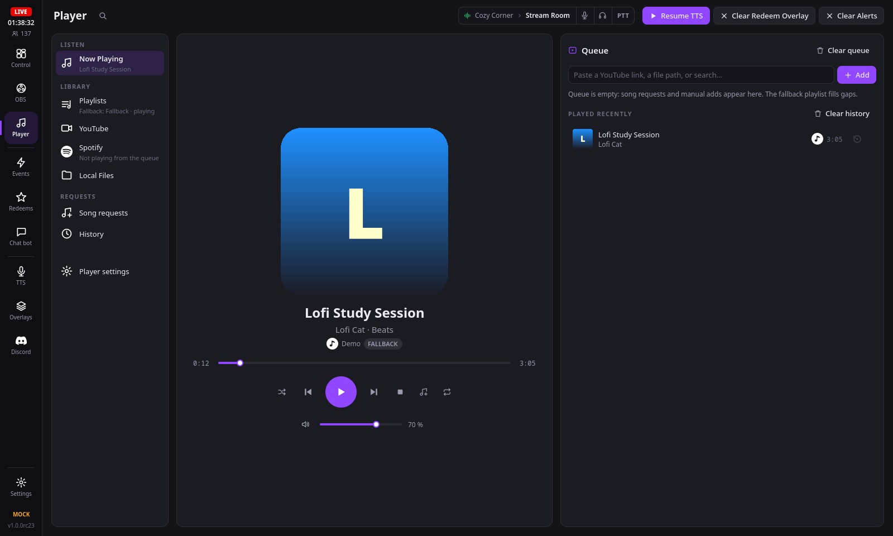
Now Playing with the queue next to it
The player's sections
Now Playing — what's playing, with the volume, and the queue: add a link, file or search, move,
save to a playlist, remove. Requested songs show who asked for them. On other pages the mini player has shuffle, and the queue
button opens Now Playing.
Playlists — your lists; mark one or more as fallback: it plays when there are no requests.
YouTube / Spotify / Local Files — search and add by hand; Spotify also has its Home.
History — what played: copy the link, save to a playlist, queue it again.
Clear history empties the list (and Played recently under an empty queue).
Song requests — the rules for viewers and the chat replies (below).
Player settings — three tabs: Playback (what the fallback
playlist does when a request comes, the sound engine, media keys), Spotify & YouTube
(Spotify playback, opening it, Use my browser's YouTube sign-in) and
Music on stream (the music mix, Add to OBS, the music overlays).
Your Spotify music
Carry on in Spotify (in Now Playing; in the mini player, the note button while nothing plays)
turns on your own Spotify music on this PC: Homin opens Spotify if it's closed, moves playback there,
and Spotify carries on with what it played last. The play button does the same when the queue is empty and there's no fallback playlist.
Spotify Home (Player › Spotify, next to the search) — liked songs, recently played, your playlists, top artists,
saved albums and artists as tiles; a click plays it in Spotify, and the player follows it. Spotify's own mixes aren't open
to apps: a mix shows up once it has played, and is named after its artists. For recently played and artists, sign in to
Spotify again (new permissions).
Player settings › Spotify & YouTube: Open Spotify with Homin (its last
song is the current one, paused) and Open Spotify minimized; both off at first.
While Spotify plays outside the queue, the button in Now Playing says what it will start: Back to queue
or Play the fallback playlist.
Media keys
The play/pause, next and previous keys on the keyboard and headphones, and the system's media controls, control
the player: Homin shows there as a music player with the song, cover and position. On Linux that's MPRIS (KDE's and GNOME's widget,
the lock screen, playerctl), on Windows the controls by the volume and on the lock screen. On at once;
Media keys control the player turns it off. If Spotify plays at the same time, the system picks which gets the key.
The music mix (Linux)
Player › Player settings › Music on stream › Mix the music into one sound device adds a
Homin Music sound device. Homin's player and the programs you turn on under it (Spotify, Pear Desktop for YouTube Music, anything)
move into it each time they start playing, and you hear everything in your speakers or headphones.
Turn the mix on, and the programs that should be on stream. A program shows in the list while it plays: start a song and
click Check again if it isn't there.
Add to OBS under it adds Homin · Music mix to the current scene. Remove the old
Homin Music capture, or the songs will sound twice (the page says so).
What you hear of it is only your volume; the stream gets the music in full, its level is in OBS's mixer.
The headphones button by the volume has both: On stream and You hear, with
a mute just for your headphones.
The device stays while Homin is closed, so a restart doesn't pull the music off the stream; turning the mix off removes it.
It needs pactl (pipewire-pulse or PulseAudio). YouTube Music in a browser tab moves the whole browser — with
Pear Desktop it doesn't.
Music through a browser source
For those who want the music quieter (or off) for themselves but not for viewers — and without Linux.
Overlays › Music: turn on Play the music here too and click +. The source is added with
“Control audio via OBS”, so the sound goes to the stream, not to your speakers.
Turn off or remove what captured the player until now (Homin Music or Desktop Audio), or viewers
will hear every song twice.
OBS plays a source's sound only in a scene that shows it: add the music to every scene with music (or to one nested scene).
The player stays in charge: the page plays the same song, pauses and seeks along with it. The player's slider is now only
for you; Volume on stream sets what viewers hear. Spotify songs play in Spotify and don't come in here.
Song requests
How to turn them on
On the Redeems page pick Song Request (made on the first
start) and click Create on Twitch. Set your price.
A viewer picks the reward and writes a YouTube or Spotify link (if set up) or just a song's name.
Homin checks the request, queues it and answers in chat. If it doesn't fit (too long, already queued, too soon) the points are refunded.
Rules
Player › Song requests: where songs may come from (a switch for YouTube, your music folder and Spotify), where to
search plain names, the longest length, songs per viewer, the queue's size, the pause between requests, repeats, songs with
explicit lyrics, Russian songs (below) and, on the Chat replies tab, the replies — when a song is queued, when it plays at once, when it's refused, when a requested one starts
playing later. Each reply has its own switch; one that's off writes nothing, but the request works and points are refunded.
Priority Song Request puts the song at the front of the requests without cutting off the one playing.
Skip Song skips the current one and says who skipped what and whose it was. The action fills in
{song}, {artist} and {requester} for the next steps. When nothing plays, the points go back.
Moderators have !sr <link or name> (the song rules apply, the viewer limits don't) and
!skip (skips a paid one too). Both are on the Chat Bot page, off at first.
Russian songs
Russian songs: Reject (allowed at first) refuses a request when the title, artist or
album is written in Russian, or YouTube's automatic captions heard Russian in the song; the points are refunded. Ukrainian letters
in the title keep the song, Bulgarian and Serbian titles don't count as Russian. Neither YouTube nor Spotify says a song's
language, so a Russian song in Latin letters or with a short title can still get through.
Paid songs from donatik.ua
They play ahead of every other request (priority ones too), in the order paid, with a gold price badge and “paid” instead of
“requested”. One doesn't cut off a request that's playing — unless Paid songs play right away is on: then it
starts at once, and the cut-off song carries on from the same spot after the paid ones. A paid song never cuts off another paid one.
Homin looks at the widget every 5 seconds. A song put in the queue leaves the widget's playlist (it moves to “deleted
music” on donatik), so the widget won't play it a second time. A song the player can't play stays on donatik.
Your limits (length, songs per viewer, the pause) don't apply to paid songs — donatik has its own.
Paid songs can't be skipped with channel points (on at first): the skip is refused,
the points are refunded, and chat is told why.
The moderator link is in the keyring, not in an export: whoever has it controls the widget's playlist.
Reconnect tries at once if donatik hasn't answered for a while.
Text to speech (TTS)
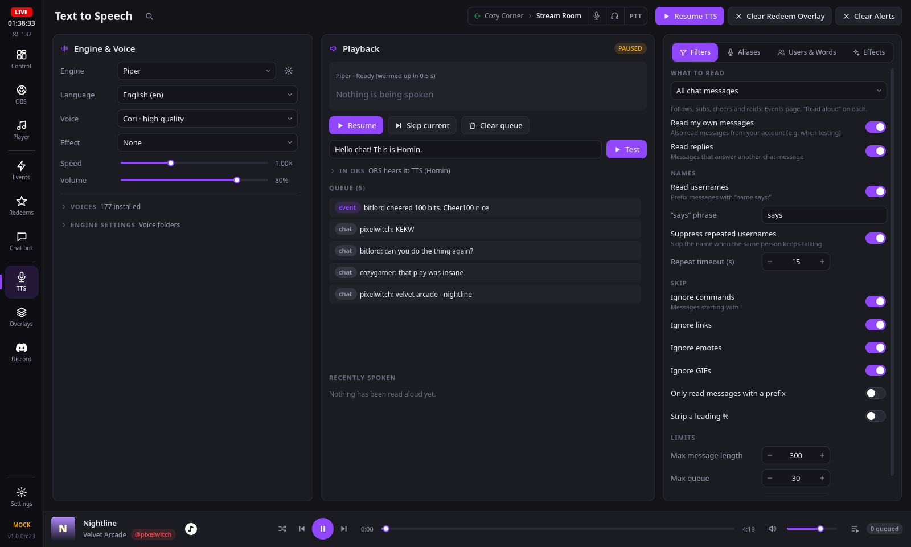
The engine and voice, playback with the queue, filters
Engines and voices
The Engine list holds only the engines ready to speak, and Off (nothing is read). The
Engines button next to it opens a window: the engines already on the PC (in the Engine list's order) apart from those
that can be installed, each in three lines — what it is good at (✓), what to know before choosing it (–) and how much room it takes on the disk and in memory. Installing is one button,
no Git; a freshly installed engine becomes the current one at once (StyleTTS2, once it has voices). Reinstalling, another StyleTTS2
build and Remove are under Details; the current one can be removed too, and then
Homin moves to another ready one. Only one engine is in memory: the one you switched from frees it at once.
Engine
Worth knowing
Supertonic 3
Ten voices, each speaking 31 languages, so one voice reads chat in Ukrainian and
English, each message in its own language (or one you pick under Language), and a mixed one in parts
(“Дякую всім! See you next time”). Russian is read with a Ukrainian accent while
Ignore Russian language is on. About 0.5 GB, on the CPU, a line in about a second; quality
Fast, Normal or Best. Your own voices are under Voices: mix two existing ones or add a Supertone Voice Builder file.
The model is under the OpenRAIL-M licence: no impersonating other people and no harassment.
Piper
Many languages, about 200 MB. Voices are under Voices: pick a language, and Piper's list shows
its voices with quality and size; Download puts a voice where it belongs. Voices added by hand (.onnx with
.onnx.json) work too. Each voice has its own licence — check it before a monetized stream.
StyleTTS2
The most natural Ukrainian, in one button; several GB (mostly PyTorch), Remove
frees the room. It comes without voices: under Voices paste a Hugging Face link to .pt presets,
Find voices shows them with their author's licence, tick and download them; From files… adds
your own. For example, the styletts2-ukrainian
page (MIT) holds over thirty Ukrainian voices: paste its address. On NVIDIA it takes about 1.15 GB of video memory, with Half precision on the GPU about 0.85 GB.
RAD-TTS++
Ukrainian, in one button, on the CPU: three voices — Tetiana, Mykyta and Lada (a newer model of
Piper's uk_UA-ukrainian_tts voice, 44.1 kHz). A chat line in well under a second; about 2.5 GB. It reads
Ukrainian letters (English in Ukrainian letters) and evens out the volume. + after a vowel in an alias marks the stress: замо+к.
Online services
Azure Speech, ElevenLabs, Google Cloud and OpenAI, under
Online services in the Engines window. Each uses your own account: paste its API key (and Azure's
region), kept in the OS keyring; Save checks it with the service and says if it was refused. Then
Use it like any other engine. What it reads is sent to that service, which bills you; none is used
until you pick it, and none reads ahead. Ukrainian voices: Azure's Polina and Ostap and its multilingual voices,
ElevenLabs' (Flash v2.5), Google's Chirp 3 HD, OpenAI's.
System voices
What's already on your system.
English in Ukrainian letters. Piper's, RAD-TTS++'s and StyleTTS2's Ukrainian voices speak only Ukrainian, so
English words and nicknames are first written the way a Ukrainian would say them: “nice stream” becomes «найс стрім»,
DarkKnight_99 «Дарк Найт 99», OBS «оу бі ес», and chat words as chat says them (gg «джі джі», lol,
pog). In Supertonic only English words inside a Ukrainian sentence are written this way; English sentences stay
English. The Read English in Ukrainian letters switch is under the voice (on at first).
Under the voice are the Voices and Engine settings folds; folded, each says in one line what's set.
Free memory when unused (for engines that hold a model; 30 minutes at first) closes the model
when there have been no lines for a long time — never while live; the next line waits 10–20 s, and going live loads it ahead of time.
Voice presets are often made from recordings of real people — check what the author allows before
putting such a voice on stream.
Playback and filters
Playback — what's being read, the queue, pause, Skip current, Clear queue
and Test. While one line plays, the next is already being made — a busy chat is read without pauses.
Filters — what to read (all of chat, chat without redeems or only TTS redeems), whether to read replies and names, and what
to skip: ! commands, links, emotes, GIFs, overlong messages. A message with nothing left of it isn't read.
What's deleted isn't read. A message a moderator deleted leaves the queue or is cut off; a ban or timeout does the
same for all of that viewer's messages, a chat clear for everyone's. Redeems and events stay.
Follows, subs, bits and raids are spoken by each event's Read aloud card.
Aliases, users and words
Aliases — separate lists for words and names: search, add, change, Hear it,
delete; Edit as text — lines of original = how to read it, to paste many.
Name aliases apply to @name in mentions and replies too.
A name can be set from chat too: right-click › TTS name… (and on the viewer card), or viewers set it themselves
with the !ttsname command (Chat Bot).
Users & Words — who and what never to read (bots are already on the list).
For viewers to hear the speech
Under the playback (In OBS) you see whether OBS hears the speech; Add to OBS adds an
Application Audio Capture source with Homin TTS to the current scene by itself. On Linux keep Always show in OBS on,
so it stays in the list between messages too. More in Viewers can't hear it.
Events
Everything that happens on a follow, sub, resub and gift sub, bits, Power-up, raid and Hype Train. On the left are
General and the events with icons of what each does; in the middle, the one picked; on the right, the recent alerts.
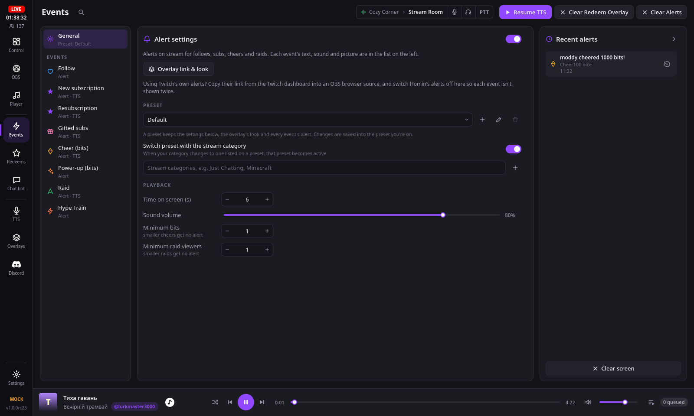
Events with icons of what they do
General and presets
General — the switch for all alerts, presets, the time on screen, volume, the fewest bits and the smallest raid for an alert.
Overlay link & look opens the alerts overlay on the Overlays page.
Presets — saved copies of the alert settings, the overlay's look and each event, for each game, say.
Name the stream categories in a preset — and it turns on by itself when the category changes. Changes are saved into the current preset.
Alerts on stream and bigger alerts
For each event: a switch, a text with variables ({user}…), a sound and a picture or a video (it plays with its own sound, and
the alert stays until it ends — up to a minute). ▶ by the sound plays it only for you; ▶ in the card's header shows a test alert
on stream. The speaker before the sound is the alert's own volume as a share of the overall one (50% at an overall 80% = 40%).
Bigger alerts (bits, gift subs and resubs, raids, Power-ups, the Hype Train): from
a certain number on (from 100 bits, from 12 months, from 50 viewers…) — their own text, sound and picture or video. The one with the highest
number reached shows; what it doesn't set is taken from the alert above. ▶ on a row tests it at that number.
Read aloud, raid, script
Read aloud — TTS speaks the event in its own text, ahead of chat messages in the queue.
Welcome the raid (under Raid) — a greeting in chat ({user}, {login},
{viewers}, {game}), a shoutout to the raider and, if you like, a scene (and back) or a source (show and hide)
in OBS — from a number of viewers on and after a pause. Try it now tests it with your own channel as the
raider. Twitch allows shoutouts only while live, one every 2 minutes.
Script — your script for the event, even when no alert shows. Off at first, until you pick a script.
Recent alerts — what was shown; the button by each shows it again, ✕ clears the screen.
Redeems and effects
Each rule ties a channel points reward to a list of actions that run in turn.
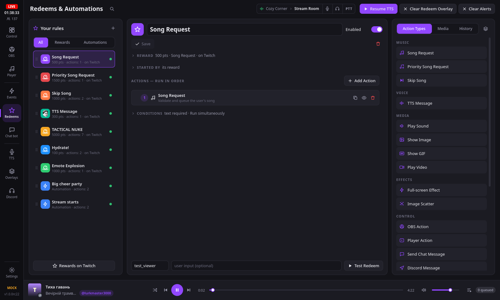
Rules on the left, the one picked in the middle, actions, media and history on the right
Rules
On the left — your rules. On the first start there are seven examples: song request, priority request, skip
song, a TTS message and three effects. + adds an empty rule or a copy of an example. Drag by the dots to reorder.
In the middle — the rule picked. The actions first; the Reward (Twitch, the price,
Create on Twitch) and Conditions (cooldowns, limits per stream, required text,
refunds) sections are folded into a summary line — “500 points · Song Request · on Twitch”.
Test Redeem runs it without spending points.
On the right — the actions: sounds, pictures, GIFs, videos, full-screen effects, TTS, messages to chat and Discord, webhooks,
scripts, steps in OBS and the player. Media is the file library, History who picked what.
The action editor
Numbers are sliders with a field for the exact value and units (%, s, °); a direction is a small dial; colours are swatches or
a palette; OBS scenes and sources come from a list. Only what matters shows.
A picture or sound shows as a thumbnail or a play button; Library… offers only the type needed.
A click on a variable inserts it at the cursor.
Placing with the mouse: with the Custom position a small 16:9 screen shows where and how big the
picture or video will be. Drag it, and its corner to resize; it snaps to the middle lines.
Actions are dragged by the dots; ▶ tries just that action as it is in the editor, even unsaved (without cooldowns or history);
Duplicate copies it below. The same is in the right-click menu.
Texts take variables: {user} — who redeemed, {message} — what they wrote, {reward}, {amount}.
The media library
Your files first, the built-in ones under their own heading. Sounds and videos as a list with ▶ and their length, pictures and GIFs as tiles.
Drop files on it or use Import; right-click to rename, delete, copy the link. While picking a file
for an action, the one in use is marked, along with which action it's for.
Rewards on Twitch and moving them
Rewards on Twitch (under the list) shows all the channel's rewards as Twitch sees them: for each, its
rule (or a new one with its name, price and colour), turn it on, off, delete it. Rewards from Twitch's dashboard or other apps
can be tied to a rule too, but Homin can't turn them on or off, delete them or refund points for them.
Move to Homin makes a switched-off copy named “… (Homin)” (names on Twitch are unique, and another app's
reward can't be renamed).
Delete the old one in Twitch's dashboard (the Delete on Twitch button opens it).
On the next load the copy takes the old name, turns on if the old one was on, and its rule answers it.
Apps can't change the icon: Set icon on Twitch… makes a PNG of a picture at the right sizes
(112, 56 and 28 px, in the reward-icons folder), opens the folder and the rewards page of Twitch's dashboard — upload them there.
Redeems while Homin was closed
After connecting, Homin looks in Twitch's queue for redeems of rewards it made: those younger than 10 minutes run, older ones quietly
get their points back (no chat message). History shows them; Missed while offline on the History tab changes that:
refund them all or leave them in Twitch's queue for you.
Scripts
A script is your own program (Python, shell or PowerShell) that Homin runs when something happens. Scripts live in the
scripts folder in the data folder (Open folder in the Script action).
Where to run them
A redeemthe Script action: shows the scripts in the folder and the variables the script will get
A chat commandRun a script in a command: !roll → {user} rolled {roll}
A channel eventthe Script card in each event: follow, sub, bits, raid…
TestingRun in the editor — with a viewer and a text you give it
The editor and templates
New script… — an empty Python, shell or PowerShell script that already reads the redeem, or an example: the latest
viewer for an OBS text source, a redeem log (opens as a spreadsheet), a dice roll, a counter for each viewer,
a check of the message for banned words, a desktop notification (Linux).
Edit — the built-in editor with coloured code, line numbers and variables inserted with a click.
Run shows what the script printed, its errors and exit code — exactly as during a redeem.
Open in my editor — for your favourite one.
On Linux a .py or .sh file runs even without the executable bit; on Windows .ps1, .bat,
.cmd and .py (Python must be installed).
What a script gets
Environment variable
What's in it
TC_USER
who redeemed, wrote the command or made the event
TC_MESSAGE
what the viewer wrote (in a command, after the command's name)
TC_REWARD, TC_AMOUNT
the reward and the amount (bits, raid viewers…)
TC_ARGS, TC_TARGET
for commands: everything after the command and its first word
TC_EVENT
for events: follow, resub…; also TC_MONTHS, TC_TIER, TC_VIEWERS, TC_POWERUP, TC_LEVEL
TC_TEST
1 for a test event
TC_VARIABLES
all of it together as JSON
A viewer's text can't be trusted
Use TC_MESSAGE only as text ("$TC_MESSAGE" in shell), never as a command.
A script can answer
What the script printed, the next actions see as {script_output}: a chat message {user}: {script_output} posts it.
A printed JSON object (all of the output or its last line) makes its keys variables: {"roll": 4, "sides": 6} →
{user} rolled {roll} on a d{sides}. The next script gets them as TC_ROLL.
{"refuse": "reason"} — a deliberate refusal: the next actions don't run, the viewer gets the refusal message with
{reason}, and the points are refunded if the reward is set up that way.
A script that ends with an error code fails the redeem; History shows the error's last line (nothing goes to chat).
A command's script that broke or ran longer than 10 seconds gets no reply.
Chat Bot
Answers in chat from your account. Nothing is posted until you turn it on: the example commands are off at first.
TTS doesn't read the messages Homin writes itself, and the bot doesn't answer them.
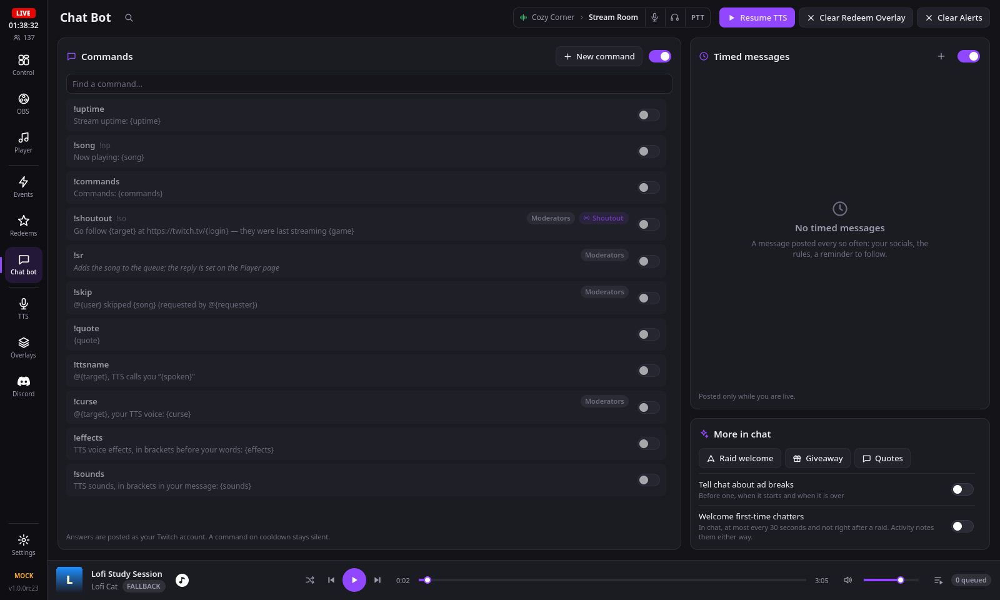
Commands, timers and ad breaks
Commands
!name and a reply. You can give it other names, who may use it (everyone, subscribers, VIPs, moderators, only you) and a cooldown — for
everyone and for each viewer. A command on cooldown stays quiet; moderators don't wait. A command can also:
give a Twitch shoutout (!so @channel; the text takes that channel's {login} and {game});
run a redeem's actions without spending points (!hydrate); {message} is what's written after the command;
count a counter or just say it (!death → {counter_name}: {counter});
control the music (!sr, !skip);
for moderators — change the title (!title …) and the category (!game Minecraft — the nearest
Twitch category); time out whoever wrote it (!vanish for 1 second clears their messages) or whoever they
named (!to @viewer).
Variables
Variable
What it puts in
{user}
who wrote the command
{args}, {target}
everything after the command; its first word (or the viewer themselves)
{arg1}…{arg9}, {args2}…{args9}
one word; from that word to the end
{count}
how many times the command was used
{title}, {category}, {uptime}, {channel}
about the stream
{song}, {artist}
what's playing
{viewers}, {followers}, {subs}
the channel's numbers
{time}, {random}, {random_chatter}
the time; a number 1–100; someone who chatted in the last ten minutes
{commands}
the list of commands
{user_id}, {channel_id}, {message_id}
Twitch ids
Timers and ads
Timers — a message every N minutes, only while live and only after a few chat messages, so an empty chat isn't
cluttered. With a counter the text gets {counter}: “Deaths so far: {counter}”.
Ad breaks — warn chat about a minute ahead, at the start and after the ads, each with its own text (an empty one is skipped).
Quotes and the giveaway
Quotes: !quote — a random one, !quote 12 — the twelfth, !quote boss — one with the word;
moderators add !quote add … (with the category and date) and delete !quote del 12. The
Quotes button shows the list. Numbers don't shift.
Giveaway (the button under the commands or the strip above the chat): a word to enter (!join), everyone who
writes it enters once; subscribers can have better odds. Draw a winner closes
entries and picks one; you see their lines after the draw — whether they're still here. Draw again picks another. Posting about it in chat
happens only if you turn it on. A giveaway doesn't survive a restart.
Newcomers and TTS names
Someone chatting in your channel for the first time is marked in Activity and counted in the summary. Welcome first-time chatters
(off at first) also greets them in chat with your text, no more than once every 30 seconds and not right after a raid. Twitch itself
says who's new, so someone who chatted a few months ago doesn't count as a newcomer.
!ttsname (off at first) — a viewer sets how TTS reads their name (!ttsname Oleksa); a moderator, anyone's
(!ttsname @viewer Oleksa). - goes back to the login. A name with a link or an ignored word is refused; up to 40 characters.
Overlays are web pages that OBS shows as Browser sources. On the Overlays page they're all together:
on the left the list and whether each is in OBS at the right size, on the right the address with a + button (add it to the current scene at the right
size), a preview and the settings.
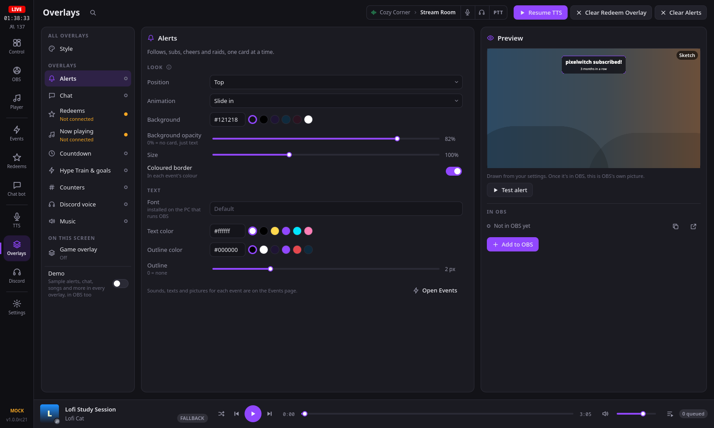
The alerts overlay picked
What overlays there are
Address
What it shows
alerts
follows, subs, bits, raids — one card at a time (the look here, the texts and sounds on the Events page)
chat
the latest chat messages with emotes and badges
redeems
pictures, GIFs, videos and effects from redeems
player, queue
the cover, title, who requested it, progress; the songs up next
countdown
Starting soon / Be right back / Ending soon with the time
nothing visible: the player's songs for the stream's sound
Alerts, chat, redeems, the countdown, the Hype Train and counters cover the whole frame and place themselves, so their source is
the canvas's size. The player and queue are cards with their own size: + puts them in the top-left corner, then move them in OBS.
The wrench button by the address fixes the source's size without moving it.
Overlay settings
Preview — the overlay as OBS draws it, about once a second, on a checkerboard where it's see-through;
Test alert and Test line put something on it. For a hidden one, Open in browser.
Alerts — position, animation, background, size, border, font (any one installed on the PC with OBS), colour and outline.
Saved in the current alerts preset.
Chat — the corner, width, text size, how many lines, whether they fade, the background and badges; what not to show: !commands, what
Homin writes itself, bots by name (Nightbot, StreamElements and others are already listed). Deleted messages go away here too.
Redeems — safety limits: how many videos, effects and particles at once, the biggest file, the longest video.
Now Playing and Queue — the style (card, text only, compact), size, accent colour, background and opacity; Homin
resizes the sources in OBS itself. Show the song's video (off at first) puts the YouTube video at the top of the card —
muted, in sync with the song.
Countdown, Hype Train & goals, Counters — where they stand, size, text; they take the alerts' font and colours.
Style (under the list) sets the colours of all the overlays together: Dark cards (as at first),
Light cards, Text only (white with a dark outline) and Neon.
Undo brings back the previous ones. Fonts, sizes and positions stay; each overlay can be changed on its own afterwards.
Demo fills every overlay with samples at once (an alert of each kind without sound, chat, a redeem, a song with
its queue, the countdown) — in OBS too, showing hidden ones and adding those that are only in other scenes. When the demo ends, everything
goes back as it was — even after a crash, on the next connection to OBS. While it runs, real alerts and
redeems wait. It turns off by itself when the stream starts.
Adding one by hand, and address options
In OBS add a Browser source, paste the address (http://127.0.0.1:9863/overlay/alerts, say) and set
the canvas's width and height (for the player and queue, the size from the Overlays page). Options at the end of the address apply only to that source:
Option
What it does
?theme=minimal, ?theme=compact
the player's and queue's style
&queue=0
hides “up next” in the player
?position=top|center|bottom
where alerts show
?position=bottom_left…
the chat's or counters' corner (bottom_right, top_left, top_right)
?position=top|bottom, ?size=150
where and how big the countdown or the Hype Train bar is
?debug=1
shows whether the overlay is connected to Homin
OBS on another computer? Turn on Allow LAN access (the overlay server card) and
copy the address with its ?key=… as the Overlays page shows it. On this PC the plain
127.0.0.1 addresses work without a key.
Game overlay
Your stream on your own screen, over the game: whether you're live, chat, Activity, the song, the countdown and who's
speaking in Discord — small windows that clicks go through, that viewers don't see, and nothing is put into the game.
Handy when you stream from one monitor and don't want to leave the game. Settings: Overlays › Game overlay
(under On this screen); it can be switched off on its own in Settings › Features.
Parts
Each part is switched on by itself; click a part in the Parts list to see its settings.
Part
What it shows
Status
whether you're live and for how long, viewers, your Discord mic muted in red, and stream health's warnings (dropped frames, bitrate)
Countdown
Starting soon, Be right back or Ending soon with the time left, while one runs
Now playing
the cover, the song and who asked for it — when a song starts, or all the time
Activity
follows, subs, cheers, raids and redeems, each for a few seconds
Chat
the newest lines (how many is up to you), each two rows at most, fading after a while or kept
Discord voice
who's in your voice channel and who's speaking; at most as many as you set, then "and N more"; needs the voice controls
For each part: its size, opacity and which way it grows — Grows sideways and
Grows up or down. "Auto, by where it is" goes by where the part is on the screen; "To the right" keeps
its left edge where you put it, however long the song's title.
Placing the parts
Move on screen (or Move parts on the control panel, right from the game)
shows every part that's on, with samples, where it will be, in a frame with its name. Drag it where it should go: it
snaps to a grid and the screen's edges, with Shift it goes anywhere. A dot on the frame marks the edge that stays put.
Done or Esc ends it; meanwhile it holds the keyboard, and it ends by itself after ten minutes.
Placement on the page is the game's screen in small with the same parts: they can be dragged there too.
Samples fills every part that's on with made-up content while you arrange them (each part's frame
is the most room it can take); Show now shows what's really there for a few seconds.
Layout at the top keeps an arrangement under a name — one for each game; + saves
a copy, the list switches, Reset to default puts the one you're on back as Homin starts.
Control panel
The panel's key opens, over the game, your Discord mic and sound, TTS, the Be right back countdown, a marker, a clip,
skip TTS, clear alerts, start or stop the stream (asks twice), the scenes, the music with its volume, and the chat with a box
to write in. While it's open it holds the keyboard and the mouse — nothing you type reaches the game; Esc, a click beside it
or switching windows gives them back. With "Show over" › "Fullscreen app" it opens only over the game you're in. Opened
while you hold the game's right button (turning the camera), the game may miss its first click after it closes.
Keys, and where it shows
Settings › Hotkeys › Game overlay: show or hide it, Peek (every part for a
few seconds, lines that already faded too) and the control panel.
Show over › Fullscreen app (the default) hides the parts when another window
or the desktop is in front of the game on its own screen; working on another monitor doesn't hide them.
Desktop shows them everywhere.
On Linux with Wayland it's a separate window of the system's Qt (qml6 with layer-shell-qt; on Arch
qt6-declarative, layer-shell-qt, qt6-websockets), which KDE Plasma keeps above
full-screen games; GNOME doesn't allow that. On Windows and X11 it stays above a game in borderless window mode, not in
exclusive full screen.
A whole-screen capture in OBS shows the overlay on stream too; a game or window capture doesn't.
Discord
On the left — what Homin posts, where (or what's off) and the voice connection; in the middle, the one picked; on the right, the latest posts.
First connect the channels.
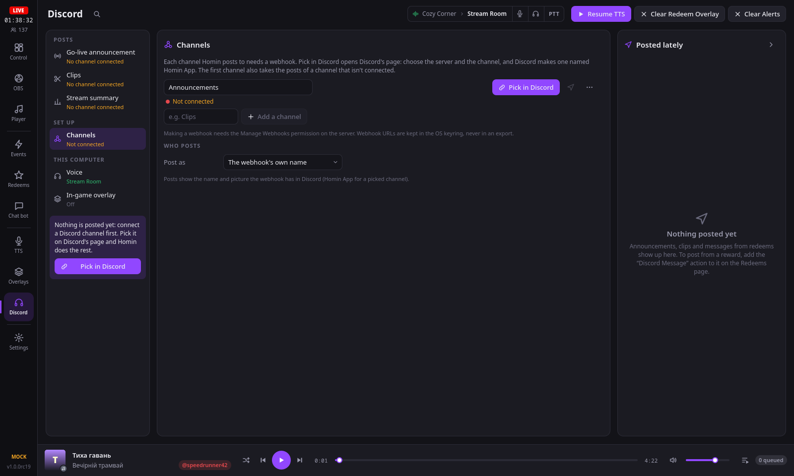
The go-live announcement with a preview of how it will look
The go-live announcement
One message at the start of the stream: the channel, a text, a mention (no one, everyone, here or a role) and a card with the title, category and
picture. It's updated when the title or category changes, and marked ended with its length after the stream.
A stream that drops and comes back within ten minutes keeps the same message — nobody is pinged twice. If Discord
can't be reached, Homin tries again after 30 s, 1 and 2 minutes. Post a test announcement posts without mentions.
Clips, summary, redeems, voice
Clips — pick a channel: a clip goes there when it's made (or marked Done) in the Clips window.
The text can name the clip with {clip}.
Stream summary — the stream in numbers, a few minutes after it ends (in case the stream comes back).
Redeems — the Discord Message action (a channel, a text with variables, a picture). A viewer's text never pings anyone.
Voice — whether the Discord app on this PC is connected, the voice channel and Leave.
Latest posts — what went out since the app started, and what didn't: Not posted
with Discord's reason. › in the corner folds the column.
Who's in the voice channel
When voice controls are connected, Homin shows the people in your voice channel: the one
speaking in a green frame, a muted mic marked.
In OBS — the voice overlay (Overlays › Discord voice): everyone in the channel or only who's
speaking; pictures with names as a list or side by side; the corner and size. You aren't shown until you turn on
Show me too. Anyone can be switched off in the list of who's in the channel now: they won't show up
on stream in any channel until you switch them back on.
Over a game, only on your screen — the game overlay's
Discord voice part: viewers don't see it, clicks go through it.
Phone remote and Stream Deck
The phone remote
Settings › Connections › Phone remote (off at first): turn it on, click
Show the code and scan it with the phone's camera on the same network. The stream's buttons open with their live
state: start and stop the stream (two taps), scenes, the camera, mic and Discord from On Stream, the song and music volume (with the
mix, what you hear too), pause TTS or skip a message, counters − / +, a marker, a clip, clearing alerts, and whether you're
live, the time and viewers.
The address has its own key (not the overlays' one); New key cuts off a lost phone.
It works only on the same network, over plain HTTP — use it on a network you trust.
The phone doesn't open the address
This PC's firewall may block the port (9863 by default). With firewalld (Arch, Fedora…) the card checks it by itself and shows two
commands that open the port; Homin never changes the firewall itself. Windows asks for permission on the first connection.
Stream Deck through OpenDeck
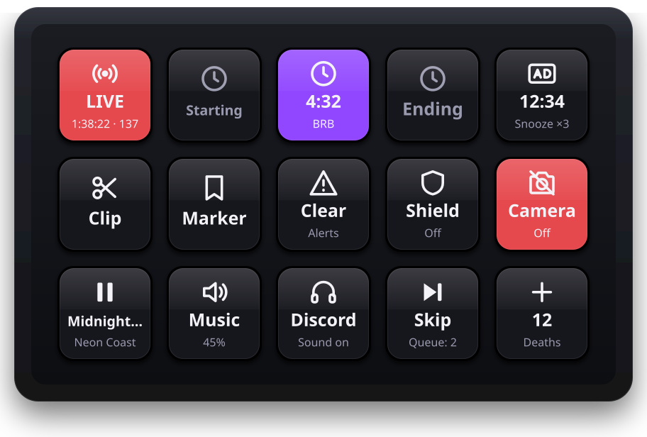
Install OpenDeck and start it once.
Settings › Connections › Stream Deck: turn the API on and click Install in OpenDeck,
then restart OpenDeck.
In OpenDeck the keys and knobs are in the Homin section. Paste the token from the card into any one — the rest take the same.
Keys: the live state with time and viewers, marker, clip, clear alerts, ads (when the next one is; snooze or
run one), TTS, music, a counter (+1 or −1, with its number), Shield Mode, the scene countdowns, an On Stream switch (red
when off), Discord (mic, headphones, push-to-talk, leave) and the chat mode.
Knobs: music with its cover (turn for next or previous, press to pause), music volume (press to mute;
with the mix, You hear), TTS volume (press to skip), the song's position, a scene countdown's time.
The keys take the app's accent colour and language. It needs Node.js (as every Node plugin of OpenDeck does).
An API for your own programs
The API works only for programs on this PC and only with the card's token (separate from the phone's key); it doesn't let web pages in.
Good for Bitfocus Companion or a script of your own. New token cuts off the old one.
curl -H "Authorization: Bearer TOKEN" -d '{"id":"marker"}' http://127.0.0.1:9863/api/deck/press
curl -H "Authorization: Bearer TOKEN" http://127.0.0.1:9863/api/deck/state
# ws://127.0.0.1:9863/ws/deck sends the state each time it changes
Bring from other apps
Settings › Data › Bring from other apps (a Bring… button for
each section; and the wizard's More step). Everything arrives switched off, so two bots don't answer together; once the other bot has left
your chat, Turn on switches on what was on there.
your channel's name (their command lists are public). With a StreamElements JWT token, timers and quotes too (the token is used once and not kept).
Streamer.bot
an export (pasted or as a file)
Firebot
its folder on this PC: commands, timers, counters with their numbers, quotes
Variables are translated ($(user), ${user} → {user}, $(touser) → {target},
$(query) → {args}, $(game) → {category}…), /timeout becomes a timeout,
${count deaths} a counter command. A command with something Homin can't do ($(urlfetch …)) stays off,
and each row says what didn't come over.
Alerts and redeems
Alerts from Streamlabs (with an API token, once): the Alert Box — texts, pictures or videos, sounds and volume, the minimum bits and
raid, “at least N” variations as bigger alerts — as a new “Streamlabs” preset. Layouts, animations, fonts and the alerts' TTS don't come over.
Redeems: SoundAlerts sounds by channel name (with cooldowns and limits), Streamer.bot reward actions (Play Sound,
chat, Delay, OBS scenes and sources) and Firebot ones (sound, picture, video, TTS, chat, Delay).
Sounds, pictures and videos behind links can be saved into the media library (on at first), so they play without the internet.
Homin can't refund points for another app's rewards — move them to Homin.
Settings
Tabs
Connectionsservices, the overlay server, the remote, Stream Deck and the two background processes (player and TTS) with a restart button
Appearancelanguage, theme (Dark, Black for OLED, Light, System default), size, accent, resource usage in the menu
Behaviourwhat Homin does while streaming (notifications, the check before going live), starting with the system, the tray and closing the window
Updatesthe update check and About with the licences and the key
Databringing things over from other apps, export and import, the data folder and where secrets are kept, Run setup again
Hotkeys and Logskeys (click a field and press new ones; Backspace clears), what happened, Problem report…
Updates
At every start and once a day an installed Homin asks the site whether a newer version is out
(Include release candidates is on while you have a candidate). The first time it finds one, it opens the
What's new window with notes for each version (in Ukrainian in the Ukrainian interface) and a button to
download the same kind of file you installed. Never during a stream: it waits for the end. It downloads and installs
nothing by itself; the file it reads is signed, so a changed site can't send it anywhere else. A click on the version under the menu opens
About with Check for updates.
Export and import
Export… saves the settings to one zip — a backup, or a move to another computer (files from
Windows and Linux are interchangeable). You pick the parts:
Part
What's in it
General
behaviour, appearance, hotkeys, the chat's and preview's options
Connection details
the Twitch and Spotify Client IDs, the channel, the OBS and overlay addresses
Alerts
texts, sounds, pictures, the card's look, presets
Text to speech
the voice, filters, event announcements, word and name replacements
Redeems
redeems with their actions and conditions, the overlay's limits
Music
the player and request rules, playlists, blocked songs and artists
Media files
the media library's pictures, GIFs, videos and sounds
Import… shows what's in the file and lets you pick the parts. The ones picked replace yours (media files are only
added). Before importing, Homin saves the current settings to backups/ (the last five), so an import can be undone.
Redeems stay tied to Twitch on the same channel.
What's not in the file
Passwords, sign-ins and Discord webhooks (they have to be entered again), folders that exist only on this computer (voice folders, StyleTTS2,
starting with the system), histories and scripts.
Shortcuts
Keys
What they do
Ctrl+1 … Ctrl+0
switch pages in the menu's order (Settings is Ctrl+0)
Ctrl+Alt+Shift+T
pause or resume TTS
Ctrl+Alt+S
skip the TTS message
Ctrl+Alt+N
skip the song
Ctrl+Alt+P
pause or play the music
Ctrl+Alt+X
clear alerts
(not set)
start / stop the stream (stop — twice within 3 seconds)
(not set)
the picked counter +1 / −1
(not set)
Layout 1–4: the first four layouts in the list on the OBS page
Change them in Settings › Hotkeys. They work while Homin's window has focus; with Work while the app is in the background —
in any window, and in a game. On Linux the desktop asks to confirm them once (KDE, GNOME 48+ and others with the
GlobalShortcuts portal) and keeps them itself from then on: change them in its settings (Change in the desktop's settings).
On Windows a key another program has already taken stays with it.
When something doesn't work
Viewers can't hear TTS or the music
Homin plays the sound on your computer, and OBS has to capture it. The easiest is Add to OBS on the
TTS page (Playback › In OBS) and in Player › Player settings › Music on stream. By hand:
Linux (PipeWire): an Application Audio Capture source in OBS: Homin TTS for the speech and Homin Music for
the music. Keep Always show in OBS on, on the TTS page.
Windows: Application Audio Capture too, the Homin Music and Homin TTS windows (both under
homin-worker.exe), a source for each. Don't take the main Homin window — then the music and speech come together.
Alert and redeem sounds come from the browser sources: in the source's properties turn on Control audio via OBS.
I want the music quieter for me, but not for viewers
Twitch refunds points only for rewards made by this app. Make the reward again with
Create on Twitch, or take another app's over: Rewards on Twitch ›
Move to Homin.
An overlay is cut off, tiny or empty
The browser source's size is wrong — click the wrench button by the overlay's address. One left empty because OBS started before
Homin refreshes by itself about ten seconds after connecting; ?debug=1 in the address shows whether it's connected.
YouTube wants a sign-in
Sometimes YouTube checks that a request isn't from a bot — and refuses the whole network, not one song. The player stops at the first such
song (queued requests wait, new ones get their points back), and Homin asks YouTube nothing for 15 minutes (longer if it happens again), so as not to
prolong the block. It usually passes within a few hours. If not — Player › Player settings › Spotify & YouTube › Use my browser's YouTube sign-in:
pick the browser where you're signed in to YouTube. Homin keeps no copy of the sign-in. YouTube may flag an account used
this way, so a spare one is safer. Firefox works best.
A feature says “sign in again”
It needs a new Twitch permission the old sign-in doesn't have: Settings › Connections › Twitch ›
Reauthenticate.
Afterburner's numbers show over Homin (Windows)
MSI Afterburner's on-screen display is drawn by RivaTuner Statistics Server (RTSS) over every program that uses Direct3D —
Homin's window too. A program can't opt out by itself, so tell RTSS: open RivaTuner Statistics Server (the tray icon),
click Add at the bottom left, pick Homin.exe in the folder Homin is installed in and, with
it selected, set Application detection level to None. The same for
homin-worker.exe if the numbers show up on another of Homin's windows.
Something else
Settings › Logs shows what happened. The log file:
System
Where the log is
Linux
~/.local/state/homin/logs/companion.jsonl
Windows
%LOCALAPPDATA%\homin\logs
Problem report… (Settings › Logs) saves one zip for whoever helps you: the version, the system,
the latest crashes and the end of the log. Sign-ins, keys, webhook and donatik addresses and your home folder's name are cut out; you can look
inside before sending it. Homin sends it nowhere. After a crash the next start offers the report by itself.
Until October 2026 Homin was called Twitch Companion. The first start after the update moves the folders from twitch-companion to
homin and the sign-ins to the new name, and updates starting with the system and OBS's sound captures. Background hotkeys on KDE have to be set again.
Limits and privacy
Worth knowing
Refunds — only for rewards Homin made (Twitch's rule).
Affiliates and partners: polls, predictions, ads, channel points, the Hype Train and goals are given by Twitch to them only.
Spotify plays in your Spotify app (Premium); Homin doesn't capture its sound itself.
Stream Together has no public API — the button opens Twitch's page.
The Twitch preview is a series of frames (20 a second, a few seconds behind) and needs ffmpeg or mpv; it downloads your stream
while it plays (about 1.5 Mbit/s at 480p). It waits out Twitch's ads rather than showing them.
Screen shake moves only the redeem overlay's content: a browser source can't move OBS's other sources.
The phone remote — on the same network only, plain HTTP.
Windows: the installer isn't signed; Always show in OBS for TTS is Linux-only; the music mix is Linux-only.
Your data
Everything runs on your computer. The Twitch, OBS and Spotify sign-ins, Discord webhooks and the donatik link are in the system's keyring
(Secret Service / KWallet on Linux, Credential Manager on Windows), not in a file, and never go into an export.
A viewer's text never pings anyone on Discord and doesn't break overlays: overlays show it as plain text.
Homin sends us nothing; other services get only what the features you turn on need. The update check only reads a
signed file on this site.
Nothing found. Try another word — “OBS”, “points” or “script”, say.